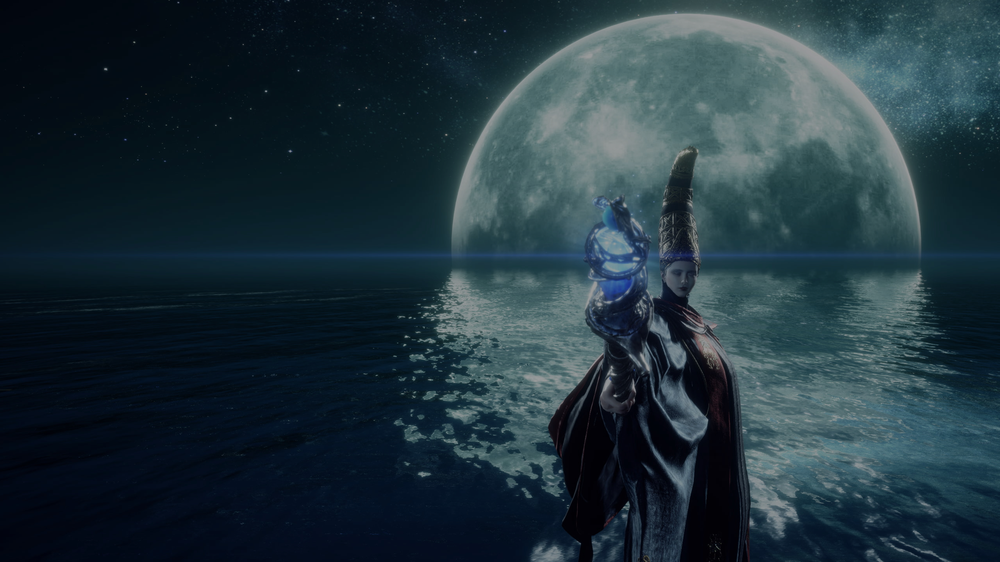
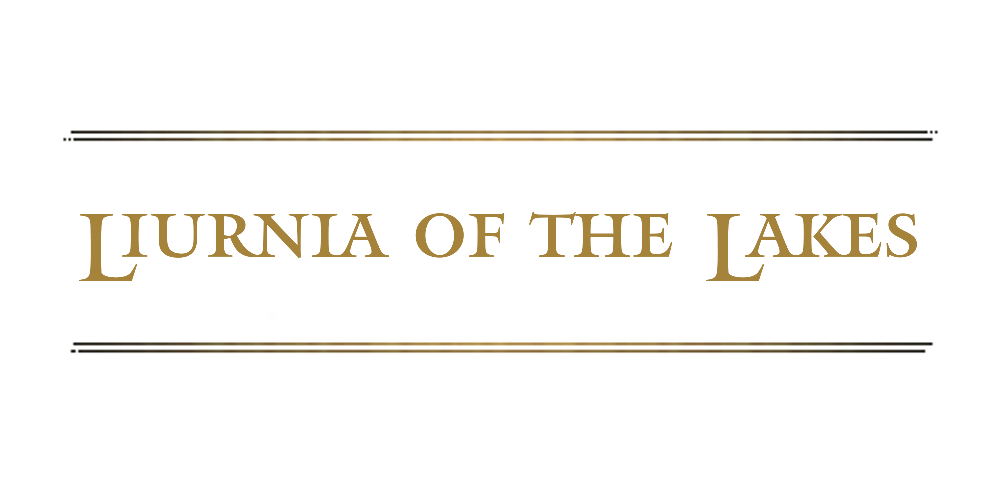
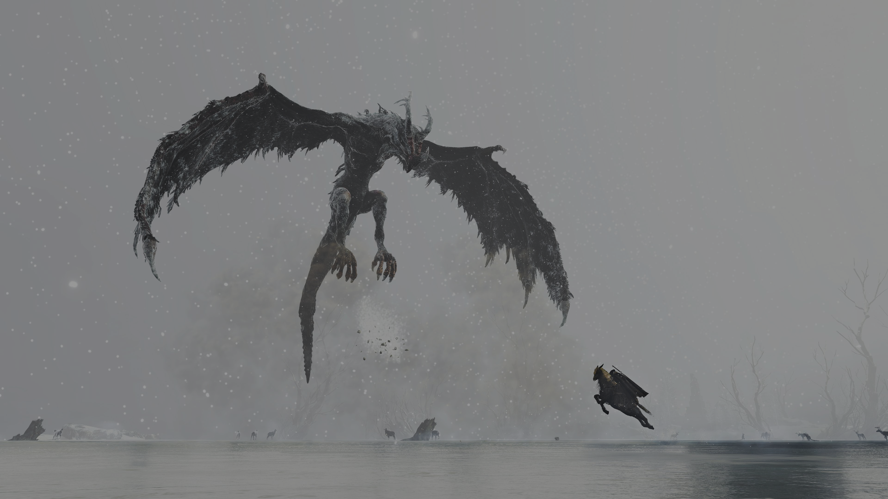
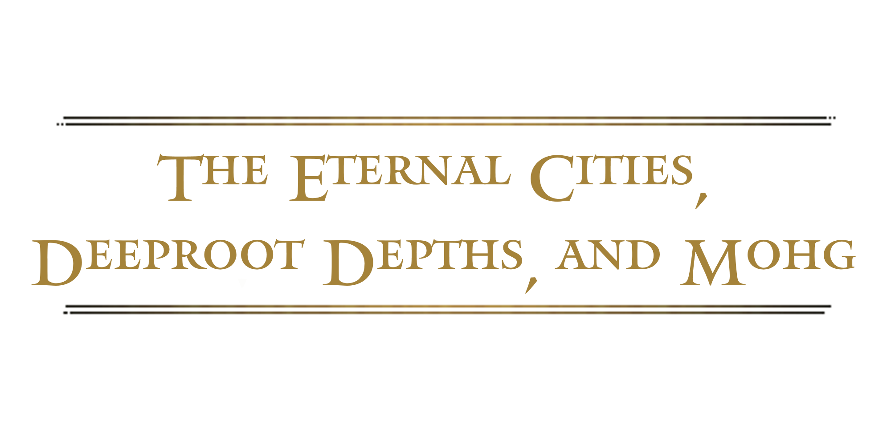
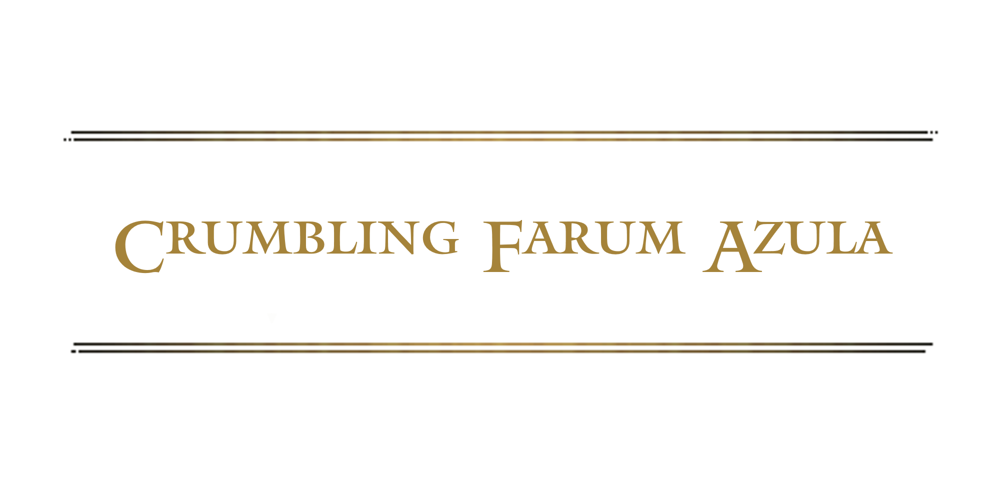
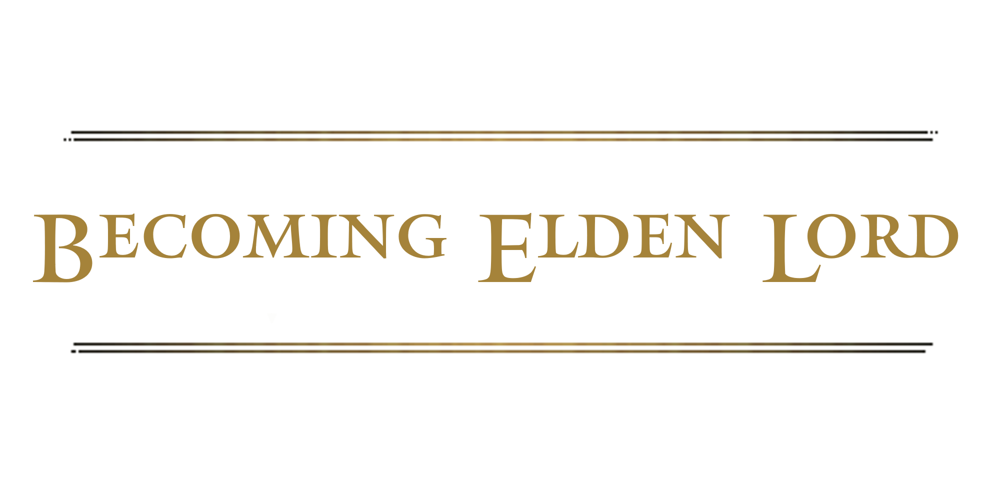
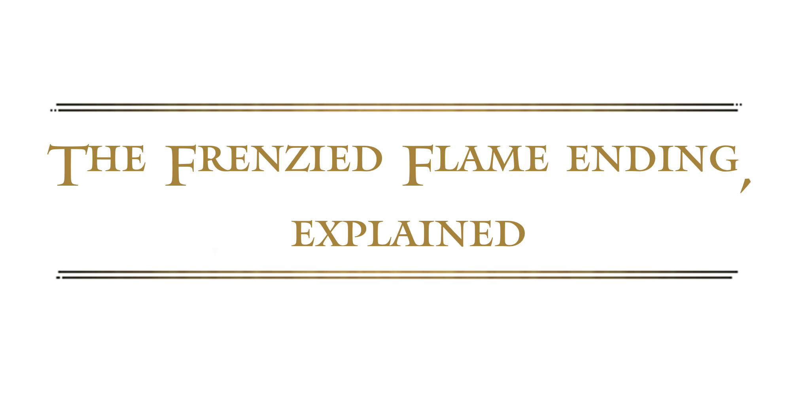

First, we have the basics. This is an explanation of what happened before the start of Elden Ring, who the major personalities are, who the player character is, and why the player character is in the Lands Between. TL;DR: A human woman named Marika was elevated to the status of god-queen by a distant and unknowable cosmic entity, and then continually screwed up the world in increasingly awful ways.

Your story begins in Limgrave. God is missing, there's no one in charge, monsters are running around, a bunch of people are being murdered, and the whole place has stagnated. In Limgrave, you'll learn about the Greater Will and the Guidance of Grace, as well as about Godrick the Grafted, a demigod usurper who runs these lands with horrific cruelty. It's up to you to kill Godrick and claim his Great Rune, a chunk of the magical Elden Ring. Gathering the Great Runes will allow you to repair the Elden Ring and fix the world.


When Godrick falls, the way through Stormveil is cleared, allowing you to venture north to the next region of the Lands Between: Liurnia of the Lakes. Another piece of the Elden Ring waits in Raya Lucaria, the Liurnian academy of sorcery. Nobody poops on the floor there, but they do plenty of other messed-up stuff. This region has a rich history that directly relates to the demigods who run the Lands Between, and it's where the intrigue among the Tarnished gets serious. There's some fierce competition to be Elden Lord--be careful who you trust.

After Liurnia, we depart to the southeast for Caelid. In this land, the biggest battle of the demigods' civil war, the Shattering, took place, and it covered the region in a deadly pestilence called the Scarlet Rot. Now the soldiers once loyal to Caelid's demigod, Radahn, fight a losing battle to contain the Rot and the creatures it mutates with the judicious application of fire. This place is hell. The Shardbearer you're hunting in Caelid is General Radahn, who was also infected with Scarlet Rot back during Caelid's major battle. Radahn lost his mind from the disease, but because of the actions of god-queen Marika, the Rot won't kill him. Radahn's loyal soldiers organize tournaments in which champions flock from around the world to try to kill the fierce but mad warrior. Check out our video for a deeper look at Radahn.

Heading north from Liurnia, you'll ascend to the Altus Plateau, where you'll find the volcanic Mt. Gelmir. Fighting still continues between the demigods' factions in this place. Volcano Manor, the seat of power in Mt. Gelmir, is home to Rykard, Lord of Blasphemy. Rykard rejected the religion of his stepmother Marika and embraced a lot of horrible actions to gain his own power. His main goals: creating snake people and eating his friends.

On your trek north, you've cleaned out a handful of demigods and gathered their pieces of the Elden Ring. With those in-hand, you can head to the base of the Erdtree, the giant, life-giving golden tree at the center of the Lands Between, and claim your right as Elden Lord. Surrounding the tree is Leyndell, Marika's capital city. And perhaps somewhat unsurprisingly, you discover that the current mayor isn't sitting around writing his concession speech.

Nothing can ever be easy. Barred from entering the Erdtree, you're forced to find another path forward. If you want to become the Elden Lord, you'll have to commit a "cardinal sin." But maybe that was the plan all along. Or maybe you're being manipulated by forces you can't understand. Either way, the answer lies in the Mountaintops of the Giants, where Queen Marika waged her first war in the Lands Between.

Hidden in the Mountaintops of the Giants is another demigod Shardbearer, waiting in a place meant to create a new, better version of Queen Marika's Golden Order. A secret group of guardians work to hide this secret place, a safe haven for the downtrodden of the Lands Between. To find your way there, you'll have to face a castle filled with ghosts and befriend one of the most persecuted peoples in the Lands Between.

Your efforts pay off, unlocking the path to Miquella's Haligtree. A son of Marika, Miquella was beloved by his followers and seemed intent on creating a new Erdtree, replacing his mother's oppressive Golden Order with something better. But what once might have been the salvation of the Lands Between is now rotted and festering with Scarlet Rot, thanks to the actions of other demigods. One of them waits for you at the base of the tree.


Like the Haligtree, the Lands Between contain many secret depths. If you descend to plunder them, you'll discover the remnants of an entire separate civilization. Once a part of the surface of this world, the Eternal Cities were cast down by the power of the Greater Will. Another Shardbearer waits in one of these secret places, communing with an outer god and hoping to claim all power in the Lands Between--unless you stop him.


We took a bit of a detour in the Mountaintops of the Giants to finish off the last of the Shardbearers, but there's one more thing we need to truly repair the Elden Ring: the Rune of Death. Also known as Destined Death, this piece of the Elden Ring was removed by Marika long ago, and it's a move that created some serious turmoil in this place. Without death working as naturally intended, the demigods became nearly immortal. To put that right, you have to defeat the keeper of Destined Death, but there's a lot more going on in this strange, floating city than first meets the eye.

With Destined Death claimed, you can finally return to Leyndell and wrap all this nonsense up. Time to grab that Elden Ring. Surely there's nobody else who could stand in your way, right? You've killed, like, everyone. Right?


This is it: the culmination of your journey through the Lands Between. You stand before a god, facing one final challenge as you reshape the world to your liking.


Elden Ring includes multiple endings, all determined by which Great Runes you claim as you work through the game and how you choose to repair the Elden Ring when you finally stand before it. These endings require you to take on various side quests in order to get the pieces you need to change the Elden Ring, and with it, reality itself. One ending stands above the others for being confusing and extremely bleak, however: the Frenzied Flame ending.